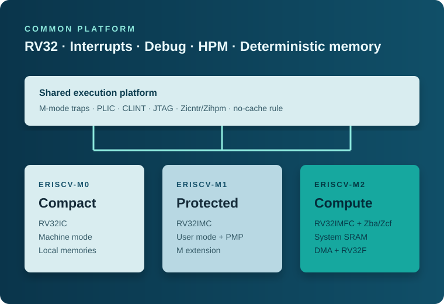

Compact baseline
+0.425 ns WNS. The local-memory control product uses no DSP blocks and 32 BRAM tiles.
FPGA EVALUATION / ROUTED RESULTS
Comparable routed implementation evidence for the eRISCV-M0, eRISCV-M1, and eRISCV-M2 MCU products on AMD Virtex UltraScale+ VCU108. M0 and M1 meet the target; M2 timing closure remains open.

01 / EVALUATION CONDITIONS
AMD Virtex UltraScale+ VCU108, device xcvu095-ffva2104-2-e, Vivado 2025.2. The retained routed reports are M0 2026-07-31 and M1/M2 2026-08-04. The target soc_clk_mmcm period is 9.999 ns (100.010 MHz).
| Product | WNS | TNS | Setup failing endpoints | CLB LUTs | Registers | BRAM tiles | DSPs |
|---|---|---|---|---|---|---|---|
| eRISCV-M0 | +0.425 ns | 0.000 ns | 0 | 9,266 (1.72%) | 5,339 (0.50%) | 32 (1.85%) | 0 (0.00%) |
| eRISCV-M1 | +0.107 ns | 0.000 ns | 0 | 16,141 (3.00%) | 6,758 (0.63%) | 32 (1.85%) | 4 (0.52%) |
| eRISCV-M2 | -0.050 ns | -0.838 ns | 37 | 25,116 (4.67%) | 9,850 (0.92%) | 192 (11.11%) | 6 (0.78%) |
02 / INTERPRETATION
+0.425 ns WNS. The local-memory control product uses no DSP blocks and 32 BRAM tiles.
+0.107 ns WNS. M extension and protection logic add LUT, register, and DSP usage while retaining the 100 MHz target.
The 2026-08-04 routed build is fully routed but still misses 100 MHz by 0.050 ns: TNS -0.838 ns and 37 setup failing endpoints. RV32F, System SRAM, and DMA account for the additional resources; 192 BRAM tiles include the 512 KiB banked System SRAM.
Reports contain CFGBVS/CONFIG_VOLTAGE and DSP pipelining recommendations as Warnings. They are not timing failures, but board constraints and DSP trade-offs require follow-up.
03 / REPORT PROVENANCE
04 / NEXT EVIDENCE
M0/M1 board programming, reset observation, I/O smoke, JTAG transport, and debugger evidence are maintained in the dedicated guide. M2 first requires 100 MHz setup-timing closure.
NEXT DOCUMENT